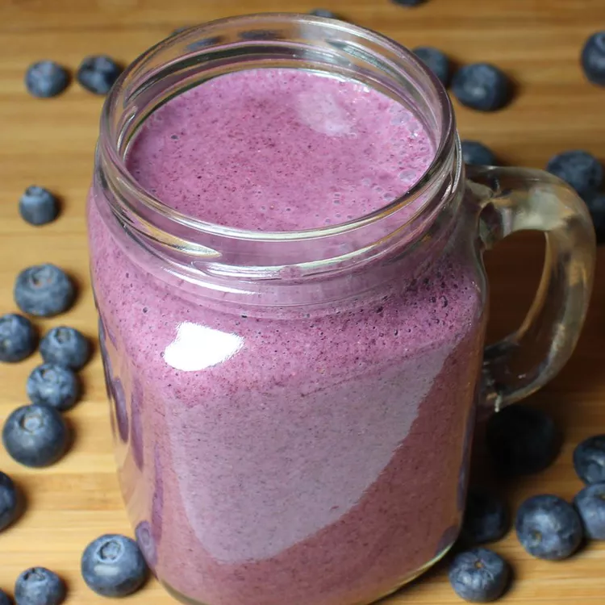

Strawberry Blueberry Smoothies

Description
A delicious start to your day. If I have extra I freeze it in ice cube trays so later I can just blend the cubes, so much better than wasting leftovers. My 2-year-old daughter loves it too!
Ingredients
- ½ cup almond milk
- ½ cup frozen strawberries
- ½ cup frozen blueberries
- ½ cup low-fat plain yogurt
- 1 teaspoon flax seed oil
- 1 teaspoon agave nectar
Steps
- Blend almond milk, strawberries, blueberries, yogurt, flax seed oil, and agave nectar in a blender until smooth.